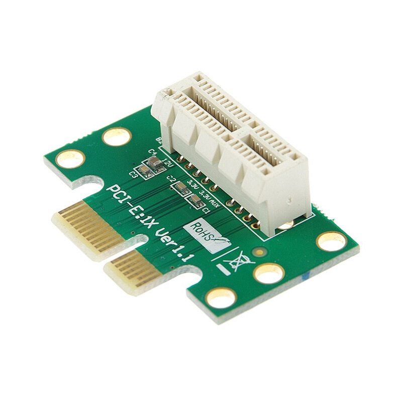
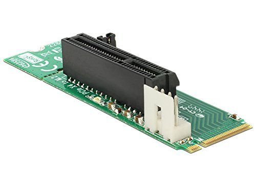
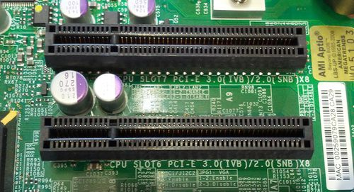
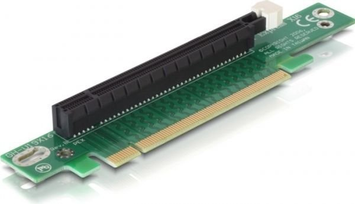

PCI Express 1.0 umożliwia transfer rzędu 2,5 GT/s. Jego przepustowość w wersji x1 to 2 Gbit/s, w x4 ma ona 1 GB/s, w x8 będzie to 2 GB/s, a w najszybszej wersji, jaką jest złącze PCI Express x16, wartość ta jest już bardziej imponująca i wynosi 32 Gbit/s.
W wersji PCI Express 2.0 transfer jest dwa razy szybszy względem starszej generacji (czyli równy 5 GT/s). Przepustowość dla x1 wynosi 4 Gbit/s, dla x4 będzie to 2 GB/s, dla x8 – 4 GB/s, natomiast dla wersji PCI Express 2.0 x16 jest to aż 64 Gbit/s, zatem także dwa razy więcej niż w przypadku PCI Express 1.
Jaka jest różnica między PCI Express 2.0 a 3.0? W wersji 3.0 transfer jest jeszcze szybszy i osiąga wartość 8 GT/s. Przepustowość również działa na korzyść tej nowszej wersji PCI Express. W typie x1 jest to 7,877 Gbit/s, w x4 – 3,938 GB/s, dla x8 wynosi ona 7,877 GB/s, a w najszybszym wariancie x16 będzie to imponujące 126,032 Gbit/s.
xPCI Express 4.0 to najnowsza wersja złącza, której parametry robią jeszcze większe wrażenie. Transfer jest dwukrotnie szybszy niż dla PCI Express 3.0 – a zatem jest to prędkość 16 GT/s. Parametry przepustowości również są dwa razy lepsze. Dla wersji x1 przepustowość wynosi 15,752 Gbit/s, dla wariantu x4 – 7,877 GB/s, czyli dokładnie tyle, ile osiąga wersja PCI Express 3.0 x8. W przypadku odpowiednika dla PCI Express 4.0 będzie to 15,754 GB/s. Najszybszy wariant PCI Express 4.0, czyli x16, gwarantuje przepustowość na poziomie 252,032 Gbit/s (31,508 GB/s).
